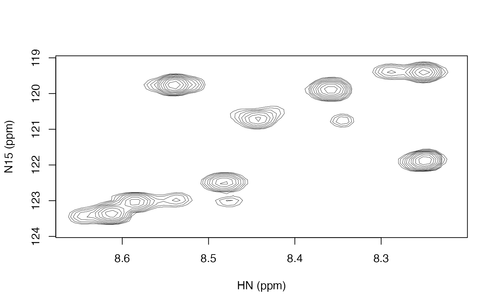

Plot a two dimensional contour plot
Arguments
- data_mat
matrix with spectral intensities.
- nlevels
number of contour levels.
- zlim
minimum and maximum values at which to show contours.
- low_frac
minimum absolute value (as a fraction of
zlim) at which to show contours.- lwd
width of contour lines.
- main
title of the plot.
- col_pos
color of positive contours.
- col_neg
color of negative contours, defaults to lighter version of
col_pos.- add
logical indicating whether to add to an existing plot (i.e. not start a new one).
- xlab
label for x-axis, defaults to
names(dimnames(datamat))[1].- ylab
label for y-axis, defaults to
names(dimnames(datamat))[2].- frame.plot
a logical indicating whether a box should be drawn around the plot.
Details
The first dimension of data_matrix is drawn along the x-axis and the second dimension is drawn along the y-axis.
If low_frac is specified, then there can actually be up to nlevels total positive contour levels and/or nlevels total negative contour levels, whichever has the larger magnitude in zlim. The other dimension will have the mirror image of those up to the relevant limit in zlim. Note that the levels do not actually go up to zlim. There are nlevels+1 log spaced levels calculated from the contour determined by low_frac up to the maximum absolute zlim, but the final level is not drawn because it is at the maximum absolute zlim.
If low_frac is set to NA, then the contour levels are calculated in the same way as contour, with there being approximately nlevels linearly spaced levels in a range close to zlim.
Note that this function does not directly take the data returned by read_nmrpipe. You must pass the int matrix from the value returned by that function.
Examples
spec_file <- system.file("extdata", "t1", "1.ft2", package = "fitnmr")
spec <- read_nmrpipe(spec_file, dim_order = "hx")
contour_pipe(spec$int)
